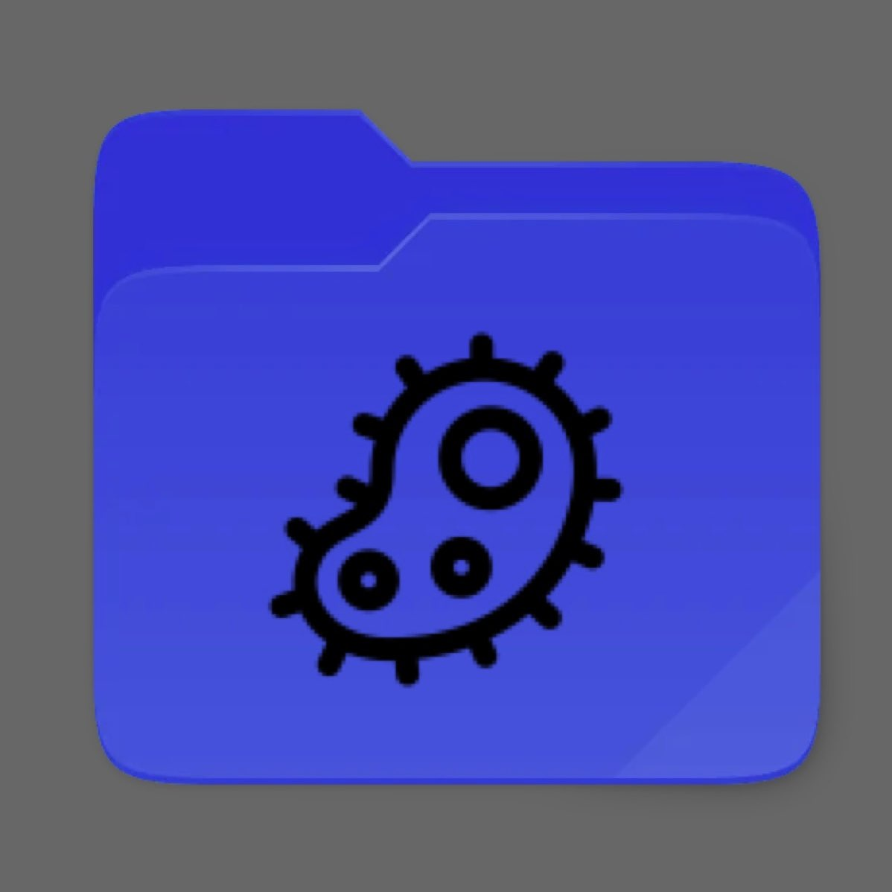

Void@linux-desktop:/void.html/News.html
News
Voidcrypt 2.0 under maintenance!

The voidcrypt team are working on a big re-skin of the whole voidcrypt machine!
Many quality of life changes, better interface, cleaner look, a more dynamic and realistic desktop simulator and much more
WE ALSO ADDED A NEW CLICKER GAME APP IN THE DESKTOP
Patch notes:
We are going to make this part slim because we want a more first-time look when the update releases, but some elements are:
- Individual player user info and stats
- New upgraded missions
- Achievements
- Hidden features
- Hidden features
- Hidden features
- Hidden features
10.11.24
Mail Update!

In this update we installed an email application on the void computer! This makes it more convenient to get information on missions and other informational emails.
This mail application was added so we can give the user missions easier, but we can also receive other mails that have other motivs.
Patch notes:
- Mail application installed (one mission)
- Info box added in login screen
- Fixed some spelling errors
- Added one simulated hacking attack (mission)
- Added leaderboard
- Hidden features
- Added shortcut to "News" page from flamefox browser
10.02.24
Login Update!
In this update we added a login index page and some small fixes!
The new login page will ensure that the visitors need to either look at the source kode to find the password or know it.
We made sure to fix some other small problems we found with the page for better experience. We also made one more easter egg to find, this one is a bit tricky... Cupid arrives soon.
Patch notes:
- Login page added
- new easter egg
- A working internet "turn on" button to use flamefox (ps: we will make it more advance)
- Added some now commands in the terminal, like "sudo"
- Added more "leaked" info (for those who have found that site :))
28.01.24
Desktop index page update

In this update we added a new home page
The new "home" is voidcrypt's new desktop! This is an better user interface, navigation system and helps adding more content over time
Like past updates we in the voidcrypt team will continue with adding more features with the optimalization of the user interface. With that said, we have added more websites, expanding the search with the use of the tor.program. in the last update, our home page was the terminal now you can open and exit the terminal as you choose from voidcrypt's desktop. Some files have other permissions, and therefore the "normal" user cant access them. The terminal is useful :)
Patch notes:
- Desktop added
- silk-road.onion updated (Since it was under maintenance)
- New online users to take advantage of added (There is a way to find username and passwords of the users. And use information to exploite)
- Some changes to the commands/file and folder names in the terminal, mostly optimalization
07.10.23
Url search engine, dark web and more files in terminal
In this update we have added some goodies.
The new url search engine lets the users access new sites, and be more creative.
We have added some new files and folders and also a new program, in the terminal. Can you find out what program it is? And how to use it?
29.09.23
Kali linux and patches

Some quality of life fixes on the website, now its actually easier to expand.
The new Kali linux terminal is up and running. We are not going to say much about what you are capable to do with it, for now atleast. Maybe you find something it can help you with while cyber hunting?
27.09.23
New lore tab! ps: Under maintenance

We made a new page for lore related content. This page will have lore from different games, series etc. And will be added by our team, or the readers who want to make a post or input.
PS: If you se any lore tab, just ignore it. There is no way to sneak peak. Right?.html
26.09.23
Added dropdown menu
We coded inn a dropdown menu to make it possible to navigate around the website easier. This also makes it easier for the Voidcrypt team to extend the website in the future.
23.09.23
Decryption page added!

Decryption is a process that transforms encrypted information into its original format. The process of encryption transforms information from its original format (plaintext) into an unreadable format (ciphertext)
We are happy to announce that we have the Decryption page up and running. We are going to be posting and updating this page. Not just add more encrypted messages to decrypt, but also add cool elements like maybe scoreboard etc.
22.09.23
Many quality of life changes, better interface, cleaner look, a more dynamic and realistic desktop simulator and much more
WE ALSO ADDED A NEW CLICKER GAME APP IN THE DESKTOP Patch notes:
We are going to make this part slim because we want a more first-time look when the update releases, but some elements are:
- Individual player user info and stats
- New upgraded missions
- Achievements
- Hidden features
- Hidden features
- Hidden features
- Hidden features